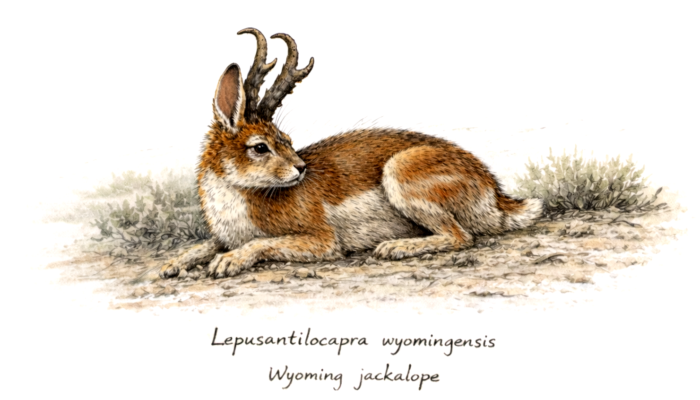
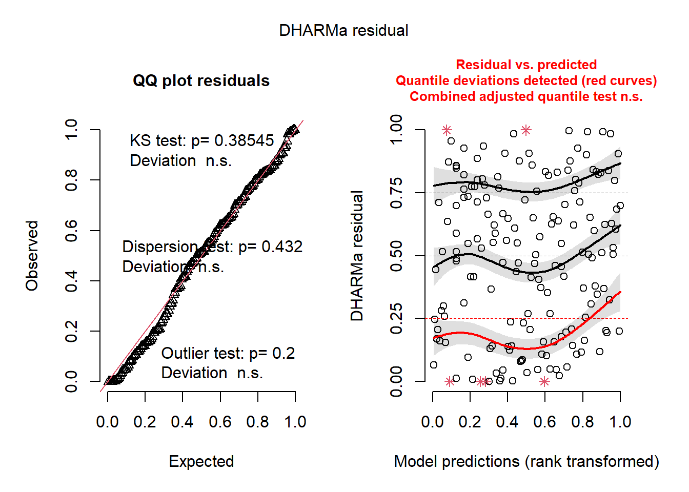

source("class_r_scripts/load_packages.r")26 Tutorial: GLMMs
26.1 Introduction
In this tutorial, we will build a Generalized Linear Mixed Model (GLMM) using the glmmTMB package. This also could be done easily within the mgcv package as well (using the gam() or gamm functions), but we will start with glmmTMB for the sake of clarity; the glmmTMB formulation remains the standard seen in the ecological literature. An extremely powerful alternative is the brms package (Bayesian regression modeling using Stan); this package can also fit GLMs, GLMMs, GAMs, GAMMs for estimating causal models. The brms package will be discussed during the Structural Causal Modeling section of the course.
These packages extend GLMs while maintaining flexibility in distributions and link functions. They are all computationally efficient and well maintained.
We will demonstrate how GLMMs can improve GLMs by first building another GLM (as if you were a naive researcher); this is obviously not the approach that a seasoned analyst would take. Note again that we will start with a horribly misspecified Generalized Linear Model (GLM), just as in the GLM Tutorial.
NoteSkim the GLM
You already have experience with fitting a GLM from the previous section. If you are comfortable with GLMs, you may quickly work through the first part (by running the code and skimming the text below).
26.2 Workspace set-up
26.3 The example dataset: The Wyoming Jackalope (Lepusantilocapra wyomingensis)
For this example, you will need the following file (simply click to save):
Jackalope seem to be everywhere. Recently, during a survey of 31 forested study plots (1 square kilometer each) here in Wyoming, scientists discovered a cryptic species of jackalope. Because it is endemic to Wyoming, they named it the Wyoming Lorax (Lepusantilocapra wyomingensis). The researchers quantified their abundance (counts per survey and multiple surveys per plot), community diversity (all jackalope species in the plots), and also measured several habitat features, including percentage ground vegetation, percentage herb layer, and percent leaf litter. Anyway, these scientists thought the scientific community would not believe their discovery, so they gave the dataset to the cryptid ecologists of ZOO/ECOL-5500. So, let us begin by importing this dataset. Then, we can save it to an object called “wyoming” and then examine the structure of the data:

wyoming <- import("class_exercise_data/lepusantilocapra_wyomingensis_dataset.csv")
str(wyoming)'data.frame': 173 obs. of 10 variables:
$ plot_id : int 1 1 1 1 1 1 1 2 2 2 ...
$ forest_age : chr "5years" "5years" "5years" "5years" ...
$ x : int 120123 120051 120006 119927 119855 119788 119742 146232 146188 146158 ...
$ y : int 183465 183558 183512 183563 183559 183546 183501 102777 102818 102891 ...
$ abundance : int 34 43 48 35 45 92 94 61 79 55 ...
$ shannon_hlog10: num 1.05 1.13 1 0.87 0.94 1.01 1.2 0.38 0.71 0.82 ...
$ ground_veg : num 0.01 0.01 0.01 0.01 0.03 0.27 0.15 0.15 0.59 0.35 ...
$ herb_layer : num 0.27 0.45 0.63 0.49 0.32 0.73 0.68 0.2 0.39 0.38 ...
$ leaf_litter : num 0 0 0 0 0 0 0 0.63 0.06 0.49 ...
$ rain_in : int 2 0 2 2 0 1 1 4 3 1 ...You see several variables and plot information:
plot_id: values 1-31 for each unique plotforest_age: categorical variable describing the age, in years, of each plottree_species: species of dominant tree in each surveyxandy: spatial coordinates in UTM (specific projection not important) of each measured surveyabundance: of Lepusantilocapra wyomingensis in each surveyshannon_hlog10: Shannon diversity index of the jackalope community in each surveyground_veg: Proportion of each survey area covered in ground vegetationherb_layer: Proportion of each survey area covered in herbsleaf_litter: Proportion of each survey area covered in leaf litter only (no vegetation)rain_in: round total precipitation (in inches…because that’s what their inexpensive rain gauge collected)
For the sake of brevity, let us assume that these data have already been cleaned and inspected for multicollinearity and outliers. That is, we will not eliminate/modidy/exorcise any data at this point. We will do some additional model validation tests (to check on the influence of outliers, etc.) after out initial analysis.
26.4 Fitting Gaussian GLM(s)
We first want to test the impact of multiple predictors on the response variable (number of parasites). We have several hypotheses to test. Following the “one model = one hypothesis” approach of Burnham and Anderson (2002), these hypotheses can easily be verbalized in a way that reflects how we test them with GLMs. That is, we think about a few of the variables and hypothesize that the number of jackalopes is impacted by:
- ground_veg + herb_layer + leaf_litter
- ground_veg + herb_layer
- ground_veg + leaf_litter
- herb_layer + leaf_litter
- ground_veg
- herb_layer
- leaf_litter
- (none of these variable…this is our null hypothesis)
These can then be translated into the form of a GLM. Below serves as a quick reminder of how we write these GLMs. You should be become familiar with this general form of the models, where “~” (tilde) can be verbalized as “…is a function of…”. The main predictors are then put after this tilde. Then, we need to specify the dataset that the function should read from. OK, let us create a few models:
mod_01 <- glm(abundance ~ ground_veg + herb_layer + leaf_litter, data=wyoming)
mod_02 <- glm(abundance ~ ground_veg + herb_layer, data=wyoming)
mod_03 <- glm(abundance ~ ground_veg + leaf_litter, data=wyoming)
mod_04 <- glm(abundance ~ herb_layer + leaf_litter, data=wyoming)
mod_05 <- glm(abundance ~ ground_veg, data=wyoming)
mod_06 <- glm(abundance ~ herb_layer, data=wyoming)
mod_07 <- glm(abundance ~ leaf_litter, data=wyoming)
mod_08 <- glm(abundance ~ 1, data=wyoming)Again, we are using these GLMs to test eight competing (i.e. multiple working) hypotheses.
26.4.1 Interpretation of the GLM results
Let us look at the first model in this candidate model set.
summary(mod_01)
Call:
glm(formula = abundance ~ ground_veg + herb_layer + leaf_litter,
data = wyoming)
Coefficients:
Estimate Std. Error t value Pr(>|t|)
(Intercept) 78.046 7.614 10.250 < 2e-16 ***
ground_veg 68.559 16.684 4.109 6.18e-05 ***
herb_layer 8.163 15.113 0.540 0.5898
leaf_litter -47.168 25.784 -1.829 0.0691 .
---
Signif. codes: 0 '***' 0.001 '**' 0.01 '*' 0.05 '.' 0.1 ' ' 1
(Dispersion parameter for gaussian family taken to be 2763.813)
Null deviance: 515594 on 172 degrees of freedom
Residual deviance: 467084 on 169 degrees of freedom
AIC: 1867.8
Number of Fisher Scoring iterations: 2Remember that When you run the summary() (or broom::tidy) function on a model object, you will see output that will be fairly consistent across GLMs, GLMMs, GAMs, GAMMs, and many other model types. As a reminder, the main part of the model output is the coefficients table; this tells you the results of your model. You should expect to see scientific notation (e.g. 5.655e-2 = 0.05655). The way to read this is like an equation for a line (since this is a linear model):
\[
\text{Abundance} = 78.046
+ 68.559\,(\text{ground veg})
+ 8.163\,(\text{herb layer})
- 47.168\,(\text{leaf litter})
\], where you would enter numerical values of ground_veg, herb_layer, and leaf_litter into the equation. So, this output is telling you that ground_veg has a significant (p = 6.18e-05) positive impact ($= 68.559; this is the slope value of the line) on abundance. No other factor shows a significant effect. But, as you will see, this was but a single hypothesis (ground_veg, herb_layer, and leaf_litter) that we tested. We need to know if it is better supported by the data than other hypotheses.
26.4.2 Information-theoretic multi-model comparison
For this, we use an information criterion (AIC) to rank competing models based on their relative support from the data. We will explain this ad nauseum in a later section, but it is sufficient for now to say that AIC provides a metric for finding a model (or models) that best balance fit and complexity. We must be explicit about what AIC is and is not used for:
- What it is not used for: “To identify the model that best fits the data”
- What it is used for: “To identify the model that captures the ecological signal without overfitting the noise”
In the AIC framework, our task is to let hypotheses (models) compete against each other given each model’s balance between signal and noise. Higher values of AIC indicate more uncertainty (and more expected information loss). The absolute value of AIC does not matter. So, for this exercise, we are looking for the model with the lowest AIC value (lowest information loss relative to a theoretical reference).
NoteAIC: What’s in a name?
Though it is now referred to as the Akaike Information Criterion, the original AIC was named –by Akaike himself in a 1974 paper– was “an information criterion.”
Let us calculate AIC values for each model that we created:
aic_list <- AIC(mod_01, mod_02, mod_03, mod_04, mod_05, mod_06, mod_07, mod_08)
# sort by ascending AIC (lowest AIC in top row)
aic_list %>%
arrange(AIC) df AIC
mod_03 4 1866.120
mod_05 3 1867.415
mod_01 5 1867.821
mod_02 4 1869.213
mod_08 2 1878.915
mod_07 3 1880.300
mod_06 3 1880.914
mod_04 4 1882.297The third model (mod_03) has the the lowest AIC value and therefore our best-supported model among those considered in the model set. Again, we will discuss the mechanics and some of the conventional approaches to AIC-based model selection later.
We have now successfully created a GLM for this dataset. But, as you know, we still have some checks to do…
26.4.3 Checking your GLM residuals
You now know why the structure of your model residuals is important. Let us check our best-supported model (mod_03) to see how the residuals are behaving. Again, use the DHARMa package’s functionality.
simresid <- simulateResiduals(fittedModel = mod_03)
plot(simresid)
Focus on the left plot (the quantile-quantile plot of residuals). Remember that the “KS test” (Kolmogorov-Smirnov test) is a test of normality of the model residuals. Here, it shows that the residuals deviate significantly from a normal distribution; this will be something to fix. It also tests for outliers in the data. The results here suggest that there are no statistical outliers. From the plot at right (the Signal portion of the residual diagnostic), we see that the median quantile of the data also shows residual structure.
So, we now need to try to fix several aspects of our model to ensure that our imposed structure is fitting the data well. Sometimes, this is a difficult and laborious task.
26.5 Fitting Poisson GLM(s)
As a first step, let us step back and think critically about some fundamental features of our dataset. Among several things we could assess, we can first examine our response variable: abundance. We have abundance of L. wyomingensis, a metric that should follow a Poisson distribution (positive skew, and >0). But we did not specify this in our original GLMs. What we did was run a set of GLMs that assumed that abundance followed Gaussian/normal distribution. What were we thinking?!?
Regardless of what the model residuals show, our priority is to ensure that our data are correctly bounded. So, let us try a Poisson distribution. We do this by specifying an argument in the glm() function for family. Unfortunately, because of our oversight, we need to refit all of our original models (and immediately forget that our best model from our misspecfied attempt was mod_03, as that will likely change). Run the following:
mod_01 <- glm(abundance ~ ground_veg + herb_layer + leaf_litter, family=poisson, data=wyoming)
mod_02 <- glm(abundance ~ ground_veg + herb_layer, family=poisson, data=wyoming)
mod_03 <- glm(abundance ~ ground_veg + leaf_litter, family=poisson, data=wyoming)
mod_04 <- glm(abundance ~ herb_layer + leaf_litter, family=poisson, data=wyoming)
mod_05 <- glm(abundance ~ ground_veg, family=poisson, data=wyoming)
mod_06 <- glm(abundance ~ herb_layer, family=poisson, data=wyoming)
mod_07 <- glm(abundance ~ leaf_litter, family=poisson, data=wyoming)
mod_08 <- glm(abundance ~ 1, family=poisson, data=wyoming)We again compare models using an AIC framework:
aic_list <- AIC(mod_01, mod_02, mod_03, mod_04, mod_05, mod_06, mod_07, mod_08)
arrange(aic_list, "AIC") df AIC
mod_01 4 5492.914
mod_02 3 5583.607
mod_03 3 5501.932
mod_04 3 5963.739
mod_05 2 5588.330
mod_06 2 5981.654
mod_07 2 5961.821
mod_08 1 5979.687Whoa. Now, mod_01 (our most complex model) is the best-supported model, as it has the lowest AIC value. This represents a large inferential change from the Gaussian GLM above. Let us look at this best-supported model:
summary(mod_01)
Call:
glm(formula = abundance ~ ground_veg + herb_layer + leaf_litter,
family = poisson, data = wyoming)
Coefficients:
Estimate Std. Error z value Pr(>|z|)
(Intercept) 4.36815 0.01559 280.239 < 2e-16 ***
ground_veg 0.67966 0.03066 22.166 < 2e-16 ***
herb_layer 0.09970 0.03000 3.324 0.000889 ***
leaf_litter -0.50050 0.05348 -9.359 < 2e-16 ***
---
Signif. codes: 0 '***' 0.001 '**' 0.01 '*' 0.05 '.' 0.1 ' ' 1
(Dispersion parameter for poisson family taken to be 1)
Null deviance: 4899.7 on 172 degrees of freedom
Residual deviance: 4406.9 on 169 degrees of freedom
AIC: 5492.9
Number of Fisher Scoring iterations: 5And check its residuals…
simresid <- simulateResiduals(fittedModel = mod_01)
plot(simresid)
Yowzers. Everything about the model (the Noise and Signal components) seems to be poorly fit. Ouch. The DHARMa package’s residual plots continue to detect structure in the model residuals, and it has now detected other problems (e.g.outliers based on our imposed distribution). I chose this example to demonstrate how even the best model in a set of models might not be a good model. There may be other factors we failed to account for that are throwing the model into utter disarray.
We may need to adjust our chosen distribution for our response variable. Or maybe there is some non-independence that is fundamental to our data structure that we need to account for. Before reading on, refer to the DHARMa Diagnostics page for information about diagnosing the origin of these warnings.
You may have noticed from looking at the original dataset that we excluded some predictors. Think about a few potentially important data components that should have been included in our model-building and hypothesis testing in the above GLMs. Let us then remedy these omissions while we also attempt to solve our issues of non-independence. For that, we turn to Generalized Linear Mixed Models (GLMMs).
26.6 How to create a Generalized Linear Mixed Model (GLMM)
For most ecological datasets, it is generally good to always assume the presence of some non-independence and act accordingly. So, let us think about and properly specify our model and not cherry-pick what we think to be important variables.
As there are two components of a mixed-effects model (the fixed and random components), we need a set of steps to guide us through the process of determing the fixed and random structures. There are three primary steps (click on the clalout boxes below to expand):
We can put these steps into practice by extending the GLM we just fitted.
26.6.1 Fitting GLMM(s)
In the GLM formulation above, we applied our expert knowledge of our response variable (abundance) and specified a Poisson distribution. But, unfortunately, doing so seemed to negatively impact the model residuals. However, we know that the data boundaries (>0) likely reflect the data-generating processes that we are examining. Therefore, we keep the error distribution of the original GLM. There must be another component of the model that is mis-specified. Again, refer to the DHARMa Diagnostics page for information about diagnosing the origin of these warnings.
Let us then consider how we collected our data. First, we know that we repeatedly sampled each plot (range = 3-7 samples). A priori, we expect that within-plot samples will be more similar that between-plot samples. This violates the assumption of non-independence, so we know that need to explicitly include this structural element in our model. We therefore include plot as a random effect (a grouping/clustering variable). To do so, we convert it from a character string to a factor, so that the function that we use later will recognize it as such.
wyoming$plot_id <- as.factor(wyoming$plot_id) # convert "plot" to factor
# Or, in tidy R:
wyoming <- wyoming |>
mutate(plot_id = as.factor(plot_id))We then refit our model as as glmmTMB (GLMM). We have made a few important changes to our model:
- Our first action is to incorporate
plot_idas a random effect. Note the form of the random effect (in parentheses). This is a random intercept structure (the slope is the same for allplot_idlevels). - We have added the one predictor in our dataset that we omitted in the GLMs (
rain_in).
Note that we have not included models that include any two-way interactions. These models could easily be included in the candidate model set below.
Tip
Before running the GLMMs below, examine the structure of these models very closely to see how this candidate model set has been structured. Pay close attention to how the number of models increased when we added predictors.
26.6.2 Step #1: Specify your global model
Let us then identify the best random effects structure of the model. As discussed above, we start with our global model. The global model is the model with the most complex fixed-effects and random-effects structures. In this case, we have a model with four predictors and two crossed (or non-nested) random effects.
global <- glmmTMB(abundance ~ ground_veg + herb_layer + leaf_litter + rain_in + (1 | plot_id) + (1 | forest_age), family=poisson, data=wyoming, REML=TRUE)26.6.3 Step #2: Optimizing the random effects structure
Remember that, for comparison of models with the same fixed effects but different random effects, we use REstricted Maximum Likelihood (REML) by setting REML = TRUE in the glmmTMB model (see below). Why do we use REML? Because regular Maximum Likelihood is biased for estimation of standard errors of random effects. Let us begin the global model as well as models that have different structures of the random effects (while keeping all fixed effects the same).
global <- glmmTMB(abundance ~ ground_veg + herb_layer + leaf_litter + rain_in + (1 | plot_id) + (1 | forest_age), family=poisson, data=wyoming, REML=TRUE)
global_01 <- glmmTMB(abundance ~ ground_veg + herb_layer + leaf_litter + rain_in + (1 | forest_age), family=poisson, data=wyoming, REML=TRUE)
global_02 <- glmmTMB(abundance ~ ground_veg + herb_layer + leaf_litter + rain_in + (1 | plot_id), family=poisson, data=wyoming, REML=TRUE)Then, we compare these models via AIC.
AIC(global, global_01, global_02) df AIC
global 7 2452.782
global_01 6 5137.385
global_02 6 2451.736We see something interesting here. The grouping factor forest_age does not improve model performance at all when we compare the AIC of models with and without it. The grouping factor plot_id improves model performance greatly. Therefore, we select plot_id as the random-effects structure for all models.
This process could also be done with models containing different combinations of random slopes and intercepts. The world is your jackalope oyster.
26.6.4 Step 3: Optimize the fixed-effects structure
Now that we have optimized the random effects structure, we can test different fixed-effects structures against each other. Again, we are fitting what are called additive models only; these models contain no interactions between predictors.
mod_01 <- glmmTMB(abundance ~ ground_veg + herb_layer + leaf_litter + rain_in + (1 | plot_id), family=poisson, data=wyoming)
mod_02 <- glmmTMB(abundance ~ ground_veg + herb_layer + leaf_litter + (1 | plot_id), family=poisson, data=wyoming)
mod_03 <- glmmTMB(abundance ~ ground_veg + herb_layer + rain_in + (1 | plot_id), family=poisson, data=wyoming)
mod_04 <- glmmTMB(abundance ~ ground_veg + rain_in + leaf_litter + (1 | plot_id), family=poisson, data=wyoming)
mod_05 <- glmmTMB(abundance ~ herb_layer + rain_in + leaf_litter + (1 | plot_id), family=poisson, data=wyoming)
mod_06 <- glmmTMB(abundance ~ ground_veg + herb_layer + (1 | plot_id), family=poisson, data=wyoming)
mod_07 <- glmmTMB(abundance ~ ground_veg + leaf_litter + (1 | plot_id), family=poisson, data=wyoming)
mod_08 <- glmmTMB(abundance ~ herb_layer + leaf_litter + (1 | plot_id), family=poisson, data=wyoming)
mod_09 <- glmmTMB(abundance ~ herb_layer + rain_in + (1 | plot_id), family=poisson, data=wyoming)
mod_10 <- glmmTMB(abundance ~ leaf_litter + rain_in + (1 | plot_id), family=poisson, data=wyoming)
mod_11 <- glmmTMB(abundance ~ ground_veg + rain_in + (1 | plot_id), family=poisson, data=wyoming)
mod_12 <- glmmTMB(abundance ~ ground_veg + (1 | plot_id), family=poisson, data=wyoming)
mod_13 <- glmmTMB(abundance ~ herb_layer + (1 | plot_id), family=poisson, data=wyoming)
mod_14 <- glmmTMB(abundance ~ leaf_litter + (1 | plot_id), family=poisson, data=wyoming)
mod_15 <- glmmTMB(abundance ~ rain_in + (1 | plot_id), family=poisson, data=wyoming)
mod_16 <- glmmTMB(abundance ~ 1 + (1 | plot_id), family=poisson, data=wyoming)For this large model set, we then calculate AIC for each model. You can run the code below, but the results are not shown below (for brevity’s sake).
aic.df <- AIC(mod_01, mod_02, mod_03, mod_04, mod_05, mod_06, mod_07,
mod_08, mod_09, mod_10, mod_11, mod_12, mod_13, mod_14, mod_15,
mod_16
)
aic.df <- aic.df |>
arrange(AIC)
aic.dfLet us then examine the top model (the model with the lowest AIC value); remember, we are not yet using any formal AIC-based model selection and averaging methods. mod_02 seems to have the best fit, based on AIC values.
simresid <- simulateResiduals(fittedModel = mod_02)
plot(simresid)
Indeed, the residual structure of the mod_02’s Noise and Signal look much improved, even though one of the quantile lines on the right-hand plot remains problemation. But we are very close to being able to draw inference from the model.
WarningThought prompt: How could you improve the residual structure?
From your knowledge of the DHARMa residuals, what part of the model – Signal or Noise– should you focus on, given the residual structure?
Let us assume we can go ahead and interpret a bit. The main results (and final model) show that the best-supported hypothesis/model is the one in which L. wyomingensis abundance is influenced by all of the tested covariates. Ground vegetation, herb layer percentage, and rainfall influence abundance positively, whereas the precentage of leaf litter has a negative impact of abundance. Futhermore, ground vegetation and leaf litter interact to positively influence abundance.
Congratulations, you have now run a Generalized Linear Mixed Model! You are now ready to publish your first scientific article on jackalope.
26.7 Bibliography for this section
Burnham, K.P. and Anderson, D.R. (2002) Model Selection and Inference: A Practical Information-Theoretic Approach. 2nd Edition, Springer-Verlag, New York.